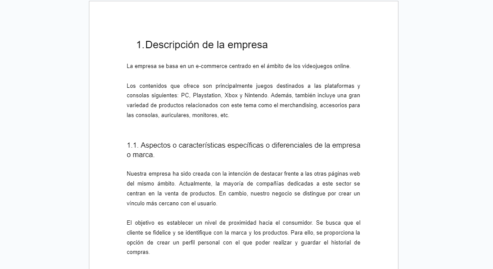
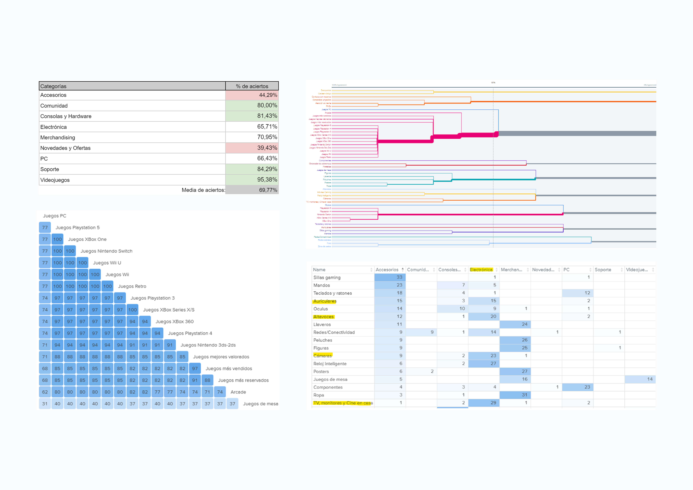

Conceptualization
I completed two projects in User-Centered Design: one focused on redesigning an existing webpage, and the other involved creating a prototype based on my own brief.
For both projects, I began by outlining the brief, then compared our product profile to similar websites we aimed to compete with.
To complete the ideation phase, we created Proto-Personas to define our target audience and validated them through a questionnaire to form the User-Personas.

Information Architecture and Navigation Design
In this phase, Card Sorting and Navigation Testing techniques were applied using the Optimal Workshop platform.
The Card Sorting allowed users to organize content based on their own criteria, helping identify information grouping patterns.
The Navigation Test was designed to ensure the clarity of menu labels, also addressing issues found in the prior Card Sorting results.

Prototyping
User Flows were created to design the interaction of the chosen functionalities to prototype. Each flow outlines the user’s path to complete a specific task.
Prototypes were built using Axure: a wireframe to test interactive aspects and layout and a high-fidelity to assess interface appearance.
Usability tests with Eye-Tracking were conducted through the Real Eye platform to iteratively improve the prototypes.